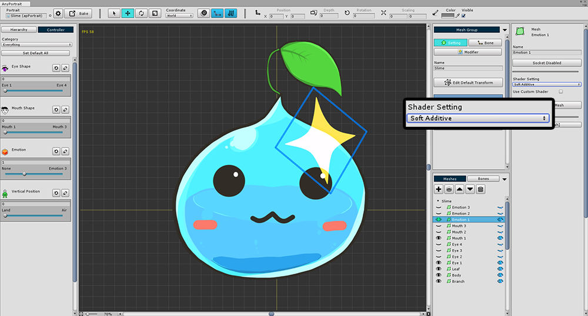
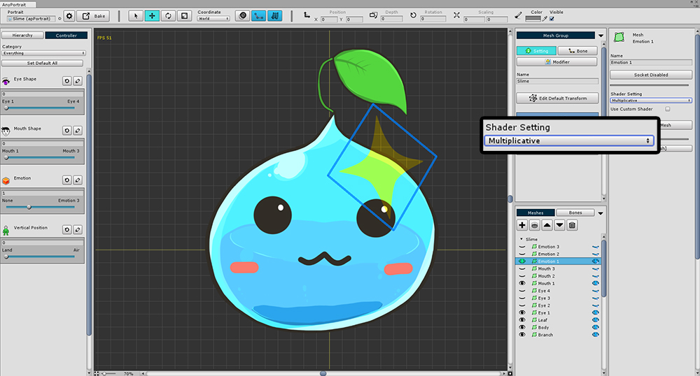
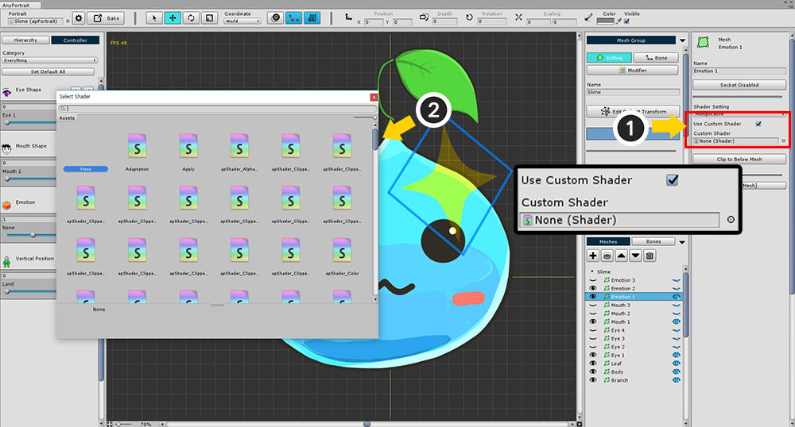
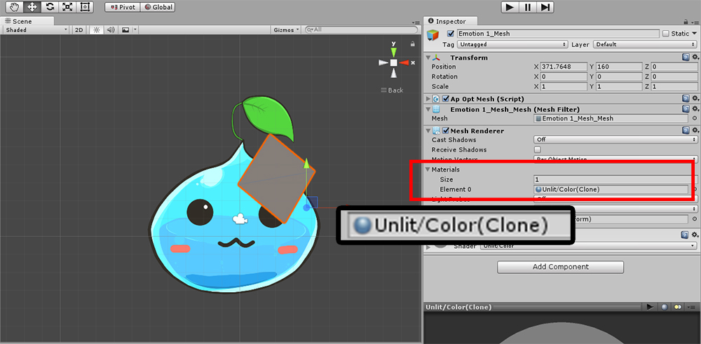
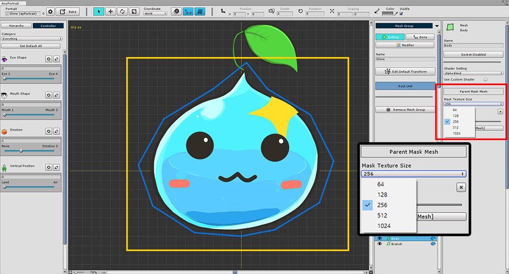
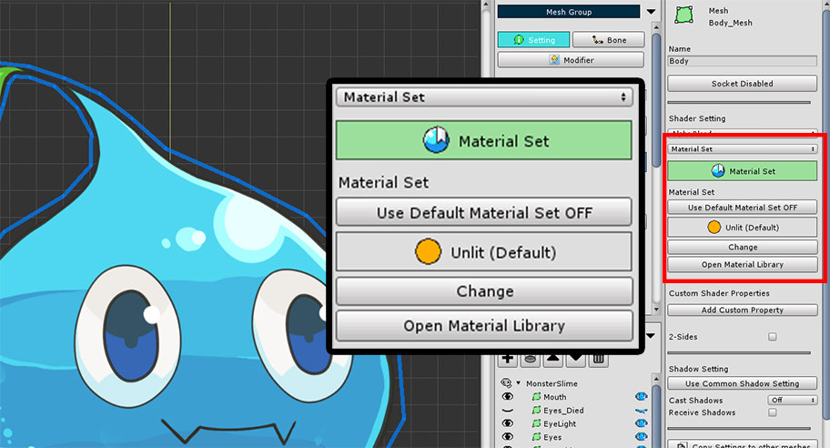
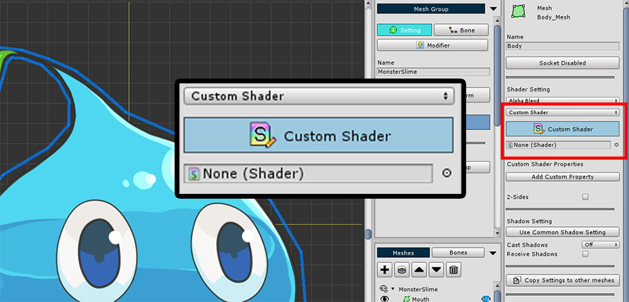
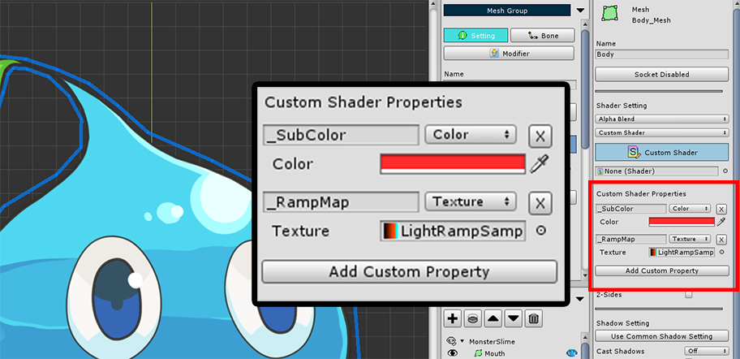
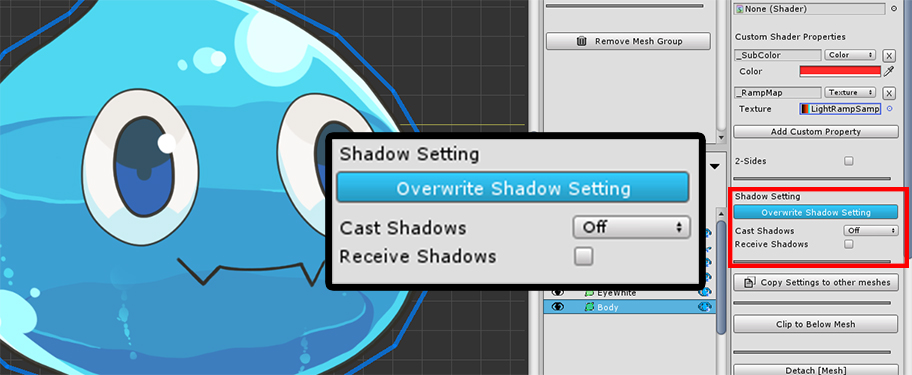
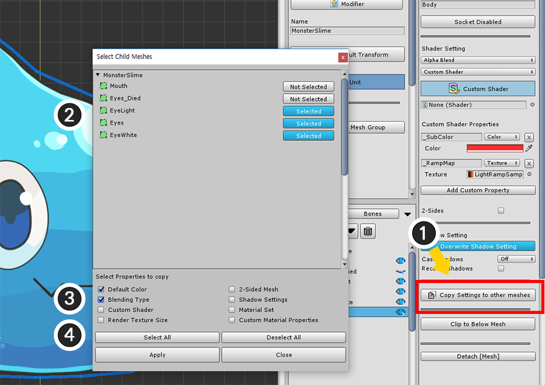

AnyPortrait > Manual > Shader for meshes
Shader for meshes
1.1.7

In AnyPortrait, users can select shader settings other than the default Alpha Blend method.
(1) Select the mesh group, and with the Setting tab selected, select the mesh you want to change.
You can change the setting in (2) Shader Setting.
Additive, Soft Additive, Multiplicative


In addition to Alpha Blend, the most commonly used Additive, Soft Additive, and Multiplicative blending options are provided.
This changed setting is applied to the scene after bake.
Custom Shader

You can use a shader other than the shader provided by the editor.
(1) Check Use Custom Shader, (2) Select Shader.
(You can find how to write shaders on the related page.)
Custom shaders are not applied in the editor.
Bake into the scene to check.

When you bake in scene, you can see that the shader that you set up is applied.
The size of the mask texture of the clipping mesh

When clipping a mesh, the mesh that becomes the mask of the clipping has the "Mask Texture Size" setting.
When performing clipping rendering in the game scene, it is processed by Render to Texture method, which means the size at this time.
Higher mask texture sizes result in higher quality clipping rendering, while smaller sizes result in less rendering load.
Since the mask texture size value is the pixel unit size on the screen, you can set it by considering the display size of the execution environment.
Mesh Properties UI in v1.1.7
There are many changes to the rendering of the mesh in AnyPortrait v1.1.7.
As a result, the UI for the mesh's material properties has changed slightly.
Below is a description of the changed UI.

These are the rendering-related properties of the changed UI.
(1) Determine the Blending method. You can choose Alpha Blend, Additive, Soft Additive, or Multiplicative.
(2) Material Set or Custom Shader can be selected.
(3) These buttons are shown when the Material Set is selected.
(4) The user can set the initial value of the Material Property.
(5) This is the 2-sided rendering option.

This is the UI when the Material Set method is selected.
- Use Default Material Set ON/OFF: Whether to use the default Material Set.
- Change: If you do not use the default Material Set, you can choose another one.
- Open Material Library: Opens Material Library, which manages Material Sets. (Related page)

This is the UI for rendering using a Custom Shader.
You can specify an external Shader Asset.

This is the UI that specifies the initial value of the material property.
It takes priority over the setting value of the Material Set.
- Add Custom Property: Add a new Custom Material Property setting.
- Property Name, Type, Value, Delete Button: This property will be applied to the material. The shader must have a property with the same name.

This is the setting for how shadows are rendered on the mesh in the Unity scene.
Turning on Cast Shadows will cast shadows to other meshes, and turning on Receive Shadows will cast shadows on this mesh.
By default, it follows the common shadow settings in the Bake dialog. (Related page)
When Overwrite Shadow Setting is turned on, the mesh uses its setting, not the common setting.

This is a feature added in v1.1.7.
You can copy attributes of the currently selected mesh to other meshes in a batch.
(1) Click the Copy Settings to other meshes button to display a dialog box for copying.
(2) Other meshes that can be copied appear, and you can select several.
(3) Attributes that can be copied.
- Default Color : Default color before applying a modifier
- Blending Type : 4 types of blending options
- Custom Shader : Whether custom shaders are used and shader assets
- Render Texture Size : The size of the render texture of the mesh as a clipping mask.
- 2-Sided Mesh : Whether to render on both sides
- Shadow Settings : Settings related to shadows
- Material Set : Settings related to the Material Set
- Custom Material Properties : The user-defined initial values of the properties of the material.
(4) There is a button to Select or Deselect All, and pressing the Apply button copies and applies the selected attributes.